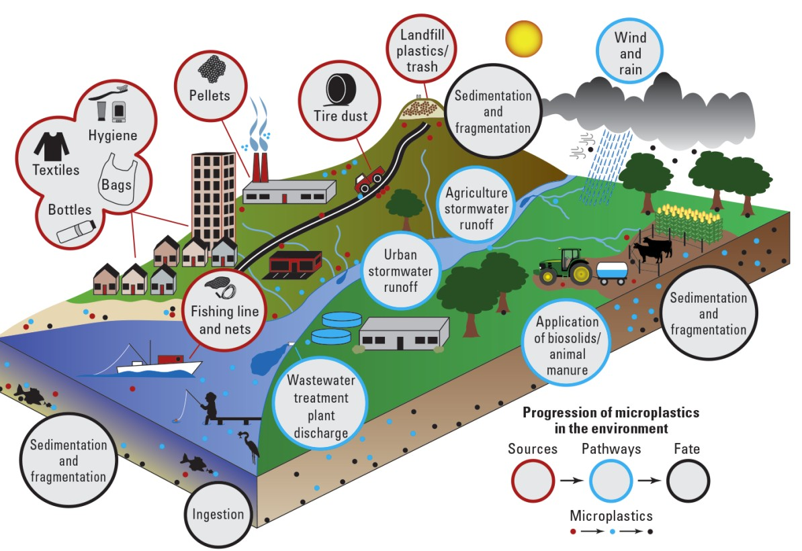

My Data Portfolio
Lending Club Loan Prediction
This project builds an early-warning system to predict loan defaults before approval (Lending Club Dataset Source: Kaggle), using only pre-loan applicant information. The model is tuned to maximize recall ensuring potential defaulters are correctly flagged. This approach prioritizes minimizing credit loss over maximizing loan approvals.
Loan Default Prediction Modelling
This project demonstrates an end-to-end machine learning workflow for predicting loan default risk. Using a much simpler dataset as compared to Lending Club (Source: Kaggle). Pipeline from loading raw data to delivering model performance reports is shown, that can be used by stakeholders to guide decision-making.
Will My UBER Cancel? - An ML Approach
A binary classification model to predict whether a ride booking will be cancelled or not, using booking details available at the time of request.
Spotify Data Analysis & Visualization
A data analysis and visualization project using Spotify data from Kaggle, featuring 17,000 tracks and 19 musical attributes (e.g., tempo, danceability, valence, mode, popularity). Through data analytics and visual storytelling, this project uncovers patterns, trends, and audience behaviors in music consumption.
Web Based Game to Promote Awareness for Microplastic pollution
An ongoing project on learning JS, and building an web based game to promote awareness of microplastic pollution during agricultural practices
